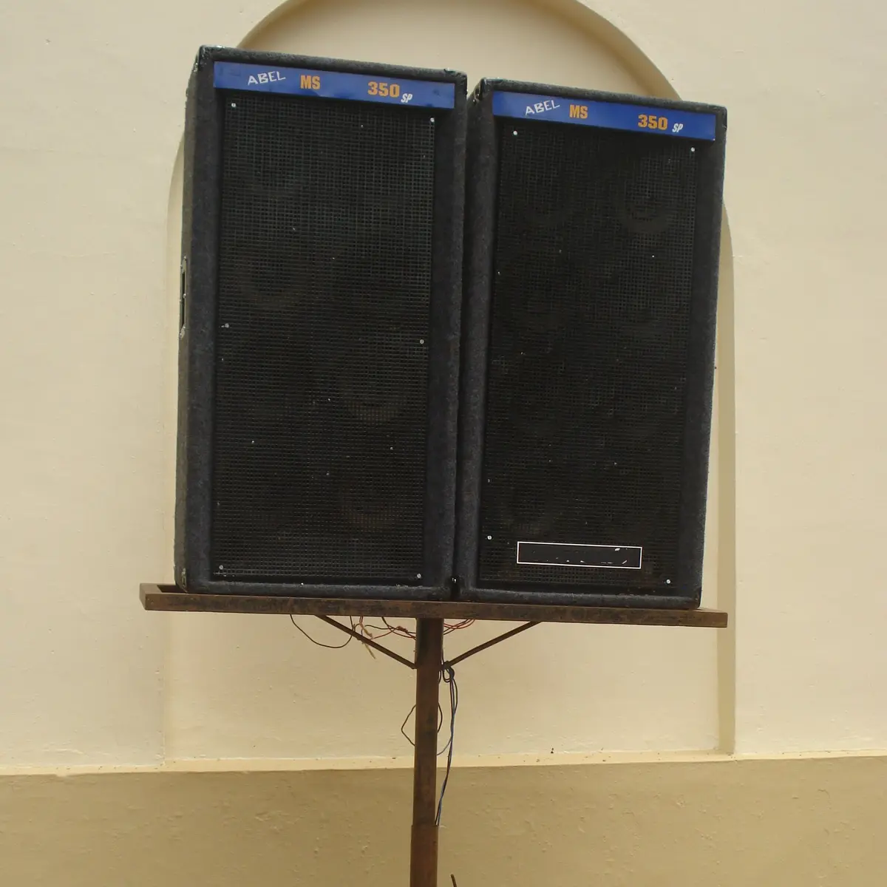

ROMFORDOct 17, 2026
Romford Kept the Receipts
Mega Mega opens in a soon-to-close South Street club, and it brings Boogie Times, Suburban Base and a decade of Essex white labels back under one roof.
Every scene has a town that the history books treat like a train stop. Romford has spent thirty years as one of those places, a name people pass through on the way to the bigger story, even though a lot of the bigger story was being pressed, sold and argued over right there in the RM postcode. This autumn the town gets to tell it in its own voice, in a room that used to be a club.
Mega Mega: Romford's Suburban Sound Revolution opens at Atik, 108 South Street, on 29 October and runs until 20 December. It is an immersive exhibition about the decade between 1989 and 1999, when Romford's record shops, labels, pirate stations, promoters, dancers and producers helped build hardcore, jungle, drum and bass and garage. The organisers at Havering London describe it as a mix of sound, archive material and first-hand accounts, plus new commissions about how that music still shapes younger artists. The detail that catches in your throat is the venue. Atik was once Time & Envy, and before that Liquid, and the exhibition is billed as a chance to see the story told there "before this former nightclub closes."
So you walk into a dancefloor that is about to stop being one, to look at the music that filled it. If that does not feel like a ritual, nothing does.
The counter was the A&R desk
The heart of it is a shop. Danny Donnelly opened Boogie Times in his hometown in September 1989, according to the Rave Archive's history of the label, and it did not stay a shop for long. Boogie Times sold dance records, but it also started pressing its own white labels, and those plain sleeves found their way into the bags of local buyers and of DJs who came out from London to dig. Wikipedia traces Donnelly's first release to a track called "Hypersonic," made with André Jacobs of the Essex label D-Zone Records.
The Rave Archive profile puts names to the room: Winston "Run Tings," Danny Breaks and DJ Ash all worked inside the day-to-day operation. Picture what that means. The person ringing up your record might be the one who made the next one. The counter was a listening post, a rumour mill and a release schedule all at once, the place where someone in a borrowed bomber and fresh eyeliner could hear a dubplate before anyone in Soho did.
That energy paid for a label. Suburban Base's first numbered release, Kromozone's "The Rush," came out in April 1991, and six more followed that year from Austin, M&M, Rachel Wallace, Run Tings, Phuture Assassins and QBass. QBass gave the scene one of its most durable slogans as a record title, "Hardcore Will Never Die."
From the high street to the charts
What happened next still sounds a little impossible for a label run out of an Essex market town. In February 1992 Sonz of a Loop Da Loop Era's piano-led "Far Out" reached number 36, Suburban Base's first UK Top 40 single. By the end of that year, the label's own history says, it had notched twelve UK singles chart hits. The loudest was Smart E's "Sesame's Treet," a cheeky rave flip of the children's TV theme that climbed to number two in July 1992 and that the label describes as the highest-charting debut from an independent since the charts began.
Then the floor split. Happy hardcore went one way, bright and helium-voiced, and the darker, bass-led side went another, toward jungle. Suburban Base followed the dark. In 1993 it put out DJ Hype's "Weird Energy" and "Shot in the Dark," and Boogie Times Tribe's "The Dark Stranger." When jungle broke wide in 1994, the label teamed up with Moving Shadow, Rob Playford's imprint founded in 1990 in Stevenage, on The Joint compilations. Two suburban breakbeat houses, neither of them in central London, shaping what the whole city danced to.
The business kept growing. Donnelly launched Breakdown Records for compilations, and its Drum & Bass Selection series, compiled with Danny Breaks and DJ Ash, sold more than 300,000 copies and was the first run of jungle compilations advertised on TV. There was a US arm, Sub Base USA, with an office in Los Angeles. Toward the end of 1997 Donnelly chose to close Suburban Base so he could move on to other projects, after starting a sub-label, Quench, for the speed garage sound that was pulling jungle crowds toward a new floor. The label began releasing again in 2014.
Why the tapes matter now
The exhibition is only half of the plan. Havering is building a permanent archive and collection from it, so the material stays held locally and open to the public after December, and the call-out has been asking people to share oral histories and to lend, donate or scan what they kept. The wish list reads like the inside of a teenage bedroom drawer in 1993: flyers, posters, photos, tickets, tapes, recordings, VHS, rave packs. Pirate radio sits at the centre of the official description too, named alongside the shops and the labels as one of the forces that carried this sound beyond the borough, and those tape recordings are exactly how a pirate broadcast survives.
That matters more than it might seem. So much of this decade lived on cassette and in memory, passed hand to hand at the afters, and so much of the official record treats outer London and Essex as the audience rather than the authors. An archive held in Romford, built from the boxes in Romford lofts, quietly corrects that.
It also lands at a pointed moment. Going out increasingly means a ticketed festival field or a room with a membership list, and the idea of a high street shop being the engine of a global sound can feel like folklore. Mega Mega is a reminder that it was real, and that it happened somewhere with a bus station and a market. You do not need a capital city to start a movement. You need a counter, a pressing plant, a few people with ears, and a floor willing to try the new white label.
Go on a Thursday if you live in Havering, when some free tickets are held for residents at the door. Otherwise it is £12, or £10 concession, booked in advance, and free for under-16s with an adult. Wear the platforms. Bring the compact. Stand in a closing club and listen to what it made.
Sources
- Havering London, Mega Mega event page: https://haveringlondon.com/event/megamega/
- Havering London, Mega Mega project page: https://haveringlondon.com/project/mega-mega-romfords-suburban-sound-revolution/
- Live Well Havering listing: https://www.livewellhavering.org.uk/events/mega-mega-romfords-suburban-sound-revolution/
- Time Out London, 21 August 2026: https://www.timeout.com/london/news/romford-electronic-music-exhibition-082126
- Suburban Base Records, About: https://www.suburbanbaserecords.com/about
- Rave Archive UK, Suburban Base: https://rave-archive.com/history/record-labels/suburban-base/
- Wikipedia, Suburban Base: https://en.wikipedia.org/wiki/Suburban_Base_Records
- Moving Shadow, About: https://movingshadow.com/about/